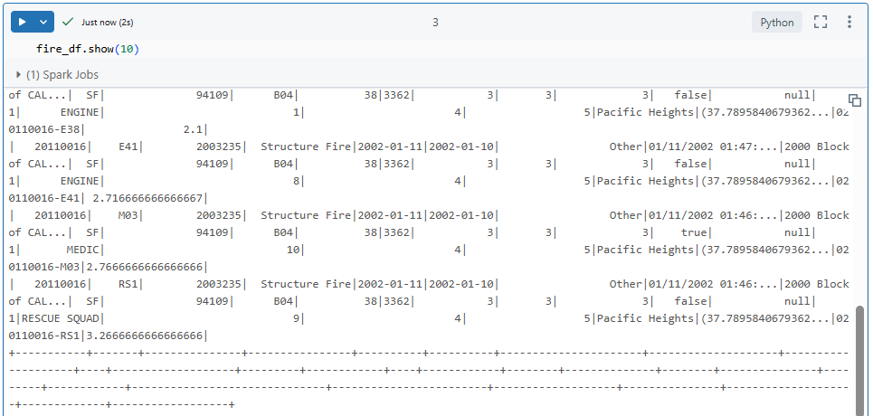
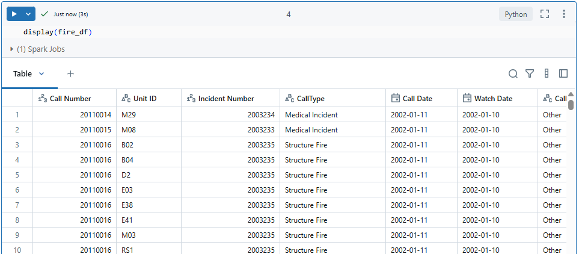
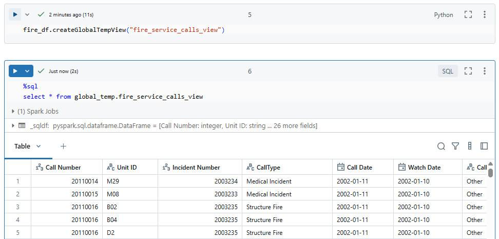

In this tutorial, we will create a Dataframe using the San Fransisco fire call response data set. The data set is already available in the Databricks community cloud, and it is made available for you by the Databricks for learning purposes.
You can access it from the following location in your Databricks community cloud.
/databricks-datasets/learning-spark-v2/sf-fire/sf-fire-calls.csv
So we do not need to download the data from the source and bring it to the cloud.
Below is the code for creating a Spark Dataframe using the San Fransisco fire call response data set. The code written here is a standard code for creating a Spark Dataframe.
fire_df = spark.read \ .format("csv") \ .option("header", "true") \ .option("inferSchema", "true") \ .load("/databricks-datasets/learning-spark-v2/sf-fire/sf-fire-calls.csv")
The code will return a dataframe, and we are assigning the dataframe to the fire_df variable.
Now let's see what we are doing.
spark.read - The spark here is a Spark Session object. Spark session is your entry point for the Spark programming APIs. Every Spark program starts with the Spark Session because Spark APIs are available to you via the Spark Session object.
The read is an attribute of the spark session object. The read attribute gives you a DataframeReader object.
So the first line of code spark.read gives you a DataframeReader.
The rest of the code, such as format, option, and load, are the methods of the DataframeReader.
.format("csv") - Format method tells the DataframeReader that which format the data file will be. In this case we have CSV format. We have other file format also like - JSON, Parquet, etc. Parquet is the default file format of Spark.
.format() is optional because if we don't pass it, the Spark will treat as parquet file format.
.option() - .option() is to given as a key and value pair. keys can be header, inferschema, mode, etc. In this example, the CSV file comes with a header row and infer schema. It is also an optional field.
Finally, I call the load method so the DataframeReader can load the file from the given location. load() is not optional.
In above dataframe creation, we were loading a CSV file there but we didn't use csv method instead we used format method to tell that we want to load a CSV file and the option method to set other configurations.
If we wanted to use the CSV method, the code would look like this.
fire_df = spark.read \ .csv("/databricks-datasets/learning-spark-v2/sf-fire/sf-fire-calls.csv", header = "true", inferschema = "true")
We are doing the same thing but CSV method is a shortcut method.
We are not setting the format and options. The CSV method implicitly tells that the format is CSV, and all other details will go as function arguments.
This long-form method(which we used earlier) is preferred because that code is standardized for loading data from any file format.
We created a DataFrame, and now we want to see some records from this dataframe. Wecan use the show method.
Lets code to show 10 records
fire_df.show(10)

It doesn't look nice. No problem. We can use display() function.
The display function is not part of Apache Spark. It is an additional tool by Databricks to format the output of a DataFrame.
display(fire_df)

Below is the code to convert the dataframe into a table
fire_df.createGlobalTempView("fire_service_calls_view")
fire_df is the dataframe.
createGlobalTempView - Creating a global temporary view
fire_service_calls_view - This is the view name.
we are not converting the Dataframe to a table. Instead, We are creating a global-temporary view that is similar to the table. We can run SQL expression on this view.
Below is the sql query to run on the temporary view
select * from global_temp.fire_service_calls_view
Below is the output

Make sure to change the cell type from Python to SQL hen run it.
The global_temp is a hidden database, and all global temporary tables are created in this global_temp database. So you must use global_temp for accessing a global-temporary view.